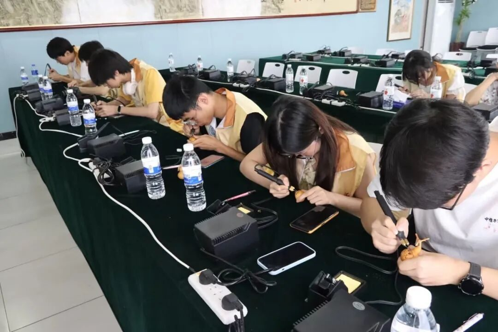
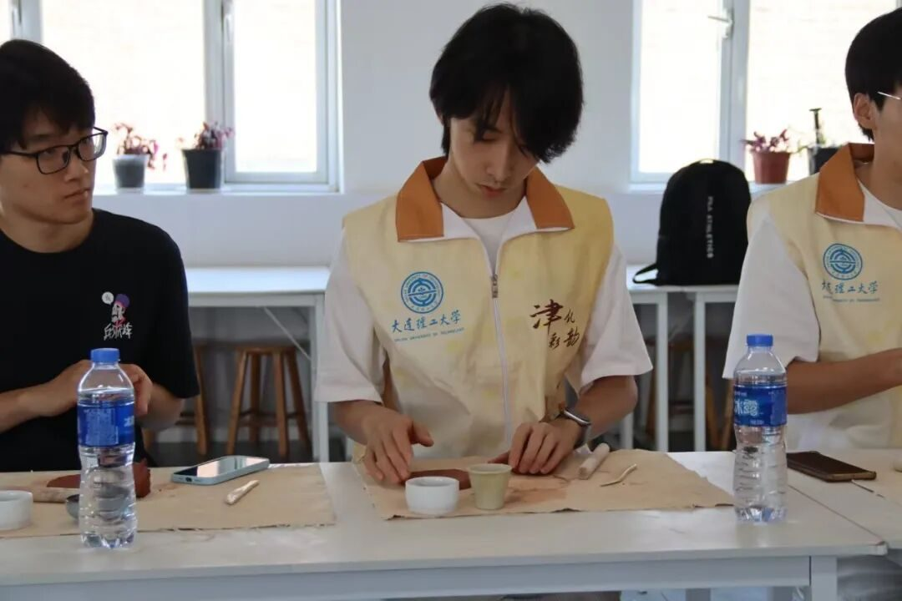

【行者无疆·津彩化韵】个人实践感悟——姜骅洲



行者无疆
津彩化韵

这次深入天津的非遗之旅，从街头巷尾的耳闻目睹，到亲身参与的动手实践，让我对“非物质文化遗产”这几个字有了前所未有的真切感受。它不再只是书本上的名词或橱窗里的展品，而是融入了城市呼吸、匠人指尖和我的手掌温度的真实存在。
行走在古文化街，当地独特的风情，传承人眼中的执着与热忱，都在无声诉说着非遗与这片土地的血脉相连。随后的博物馆之行，像打开了两扇理解之窗：天津博物馆里那些静默的文物，沉淀着深厚的文化底蕴；而民俗博物馆里那些带着生活痕迹的物件仿佛能触摸到天津人骨子里的那份豁达与乐天。
然而，最深刻的触动来自于亲手实践的环节。在王氏泥塑工坊揉捏着湿润的泥土，尝试赋予年兽形态，那份从无到有的过程，让我体会到指尖的每一次按压都关乎作品的“生命”。走进杨柳青文化馆，亲手描摹“连年有余”的年画线条，感受刻版的力道与色彩间的分寸，瞬间理解了这些看似简单的图案背后，承载着多少代人的匠心与对美好生活的祈愿。面塑体验时，看着老师傅手中顷刻间诞生活灵活现的小哪吒，反衬出自己笨拙手指下的不驯服，更深刻体会到“熟能生巧”背后所需的耐心与无数次的磨合。葫芦烙画时，烙笔尖的温度与手腕力道的微妙平衡，让我深深的痴迷其中。

最后一战探访“风筝魏”工作室，目睹那些精巧的结构艺术，看着老师傅手持风筝灵巧摆弄的身影，听着老师傅是如何让那些风筝承载着中国文化飞向世界的故事。不知不觉间忘记了时间，也在心底生出了深深的向往。


来源 | 行者无疆实践团
图片 | 行者无疆实践团
文字 | 姜骅洲
编辑 | 姜骅洲
审核 | 张瑶琪 李凌志 杩健辉
责编 | 邹靓靓 周 亮